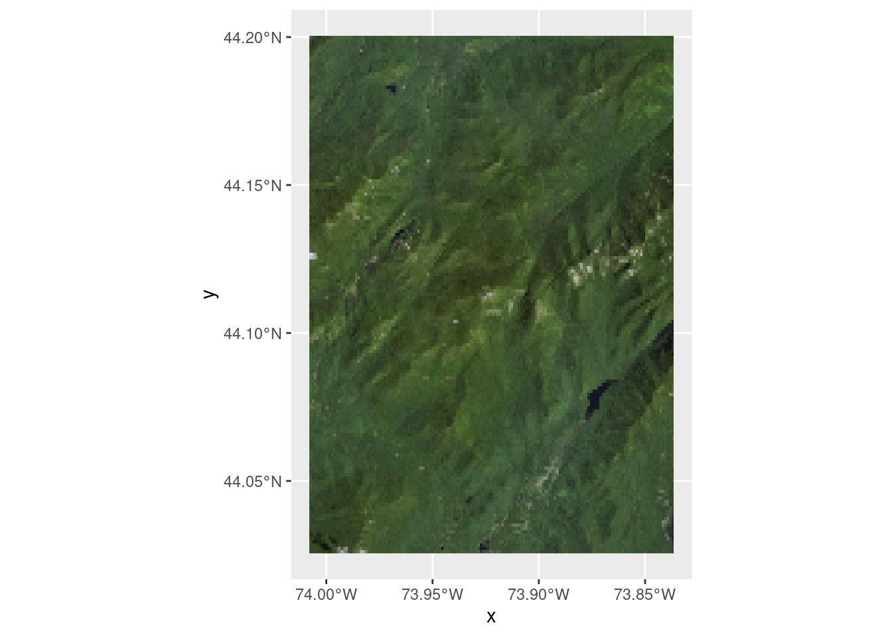

# Doesn't run:
library(terrainr)
simulated_data <- data.frame(id = seq(1, 100, 1),
lat = runif(100, 44.04905, 44.17609),
lng = runif(100, -74.01188, -73.83493))
bbox <- get_bbox(lat = simulated_data$lat, lng = simulated_data$lng)
output_tiles <- get_tiles(bbox = bbox,
services = c("elevation", "ortho"),
resolution = 90)terrainr is in review with rOpenSci and the first review just came back! I’ve been working through the comments over the past week or so, and today that work has culminated in the release of terrainr version 0.3.0.
This is a big release with a handful of breaking changes, so I felt like I should give a brief overview of the biggest user-facing changes.
Breaking Changes
Object Classes Are Dead; Long Live Object Classes
The single largest change is that terrainr specific classes are no longer exported, and users shouldn’t need to worry about getting data into or out of those formats anymore. Instead, use any sf or Raster object in their place. For instance, workflows that used to look like this:
Now look like this:
library(terrainr)
simulated_data <- data.frame(id = seq(1, 100, 1),
lat = runif(100, 44.04905, 44.17609),
lng = runif(100, -74.01188, -73.83493))
simulated_data <- sf::st_as_sf(simulated_data, coords = c("lng", "lat"))
simulated_data <- sf::st_set_crs(simulated_data, 4326)
output_tiles <- get_tiles(data = simulated_data,
services = c("elevation", "ortho"),
resolution = 90)As part of this change, get_bbox, get_coordinate_bbox, and all class creation and export functions are gone now. Use sf (or Raster*) objects in their place instead.
New Names, Who This?
get_tiles now uses the services argument to name its output list:
names(output_tiles)[1] "elevation" "ortho" This means that if you request the service elevation you can retrieve your tiles using the name elevation. If you request the same endpoint with multiple names, get_tiles will use whatever name was first in the vector.
Fewer Utilities, More Useful
Utility functions calc_haversine_distance, convert_distance, point_from_distance, rad_to_deg, and deg_to_rad have been removed (or removed from exports). For unit conversions, check out the units package. This shouldn’t impact the main uses of the package, but is still worth flagging.
Show Me What You Got
terrainr 0.3.0 adds a ggplot2 geom, geom_spatial_rgb, for plotting 3 band RGB rasters:
library(ggplot2)
ggplot() +
geom_spatial_rgb(data = output_tiles[["ortho"]],
# Required aesthetics r/g/b specify color bands:
aes(x = x, y = y, r = red, g = green, b = blue)) +
coord_sf(crs = 4326)
Note that above we just passed the file path to our raster; we can also pass a RasterStack:
ortho <- raster::stack(output_tiles[["ortho"]])
ggplot() +
geom_spatial_rgb(data = ortho,
aes(x = x, y = y, r = red, g = green, b = blue)) +
coord_sf(crs = 4326)
Or a data.frame:
ortho_df <- raster::as.data.frame(ortho, xy = TRUE)
names(ortho_df) <- c("x", "y", "red", "green", "blue")
ggplot() +
geom_spatial_rgb(data = ortho,
aes(x = x, y = y, r = red, g = green, b = blue)) +
coord_sf(crs = 4326)
Note that each step here gives you a little more control over the output image – for instance, if your raster bands aren’t in RGB order (or you have more than RGBA bands), you’ll need to provide a data.frame to get a true color image.
You can then use these basemaps like most other ggplot geoms:
ggplot() +
geom_spatial_rgb(data = ortho_df,
aes(x = x, y = y, r = red, g = green, b = blue)) +
geom_sf(data = simulated_data) +
coord_sf(crs = 4326)New Docs, Who This?
Those are just a few of the changes in 0.3.0; you can find a longer list in the NEWS file.
One thing not mentioned in the NEWS file, though, is that this version of terrainr included a complete rewrite of the documentation. The docs were mostly written while the package was being conceptually developed, and as a result gave a bit too much emphasis to some ideas while completely ignoring others. So I’ve rewritten all of the documentation that lives on the terrainr website – let me know what you think about the new versions (or if you catch anything I’ve missed!).